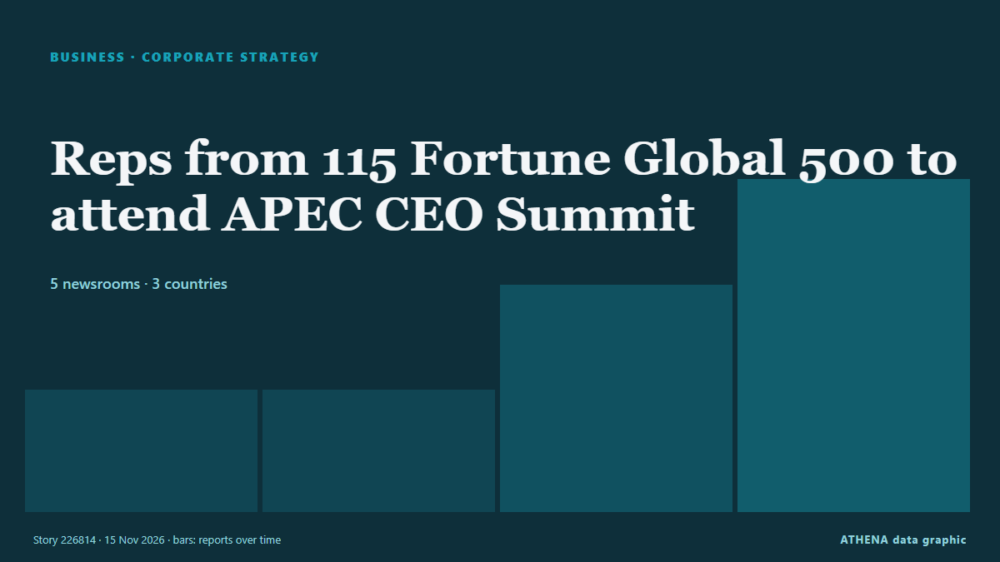

Entreprises et investissement
SponsoriséPrésenté par  Cybernetics and Artificial Intelligence Lab Welcome to the Cybernetics and Artificial Intelligence Laboratory, established at the Department of Business Administration of the National and Kapodistrian University of Athens. The lab is headed by Professor Dimitrios Thomakos. The lab aims to do research that can be published in top venues. Our research uses tools and methods of Artificial Intelligence, and lies in the following areas: - Forecasting - Decision making - Cyber security - Finance We are always looking forward to collaborating with exceptional students!
Cybernetics and Artificial Intelligence Lab Welcome to the Cybernetics and Artificial Intelligence Laboratory, established at the Department of Business Administration of the National and Kapodistrian University of Athens. The lab is headed by Professor Dimitrios Thomakos. The lab aims to do research that can be published in top venues. Our research uses tools and methods of Artificial Intelligence, and lies in the following areas: - Forecasting - Decision making - Cyber security - Finance We are always looking forward to collaborating with exceptional students!
Les titres sont affichés en anglais, tels que publiés.

Stratégie d'entrepriseReps from 115 Fortune Global 500 to attend APEC CEO Summit
Hong Kong will send one of its largest-ever delegations to the Apec CEO Summit in Shenzhen on Tuesday and Wednesday, with at least 54 business leaders set to attend, the South China Morning Post has… de South China Morning Post
| 2 nov. | 116 |
|---|---|
| 3 nov. | 111 |
| 4 nov. | 111 |
| 5 nov. | 111 |
| 6 nov. | 77 |
| 7 nov. | 33 |
| 8 nov. | 58 |
| 9 nov. | 108 |
| 10 nov. | 121 |
| 11 nov. | 100 |
| 12 nov. | 96 |
| 13 nov. | 56 |
| 14 nov. | 15 |
| 15 nov. | 4 |
Oman, Uzbekistan to expand trade and investment ties
MUSCAT: Economic relations between the Sultanate of Oman and Uzbekistan are entering a new phase of growth, driven by strong political will and a shared ambition to expand trade, i... de Oman Observer
Chinese premier calls on Chinese, Thai enterprises to lift bilateral cooperation to higher levels
Nvidia board approaches Arm CEO Rene Haas as employees push for Jensen Huang’s return: Reports
The meeting will focus on how to proceed after Huang said Sunday that he was unfaithful to his wife. de Moneyweb
Ex-Nvidia CEO Jensen Huang misled top lawyer on affair with Alice Huang, sources say
Huang described his relations with Alice Huang as typical for customer interactions. de The Straits Times
Nigeria warns citizens against transiting through Addis Ababa after 16 deaths
The Nigerian government has issued a travel advisory warning citizens about potential health risks associated with transiting through Addis Ababa, Ethiopia, following the deaths of 16 Nigerians in… de People Daily
Wallem Group appoints Apostolos Poulovassilis to lead Greek expansion
Hong Kong-based Wallem Group announces the appointment of Apostolos Poulovassilis as General Manager, Ship Management, Greece, effective November 2026. de Cyprus Shipping News
Fairbanks Morse Defense Acquires Truflo Marine
Fairbanks Morse Defense (FMD) has finalized its acquisition of Birmingham, UK-based Truflo Marine, formerly a part of IMI plc. de MarineLink
Jensen Huang Will Brief Lawmakers On Affair With Alleged Chinese Spy, Report Says
President Donald Trump was briefed about a year ago about those intelligence findings, The New York Times reported. de CNBC World
Family Dollar will pay $63M to settle unfair-pricing claims from state, federal regulators
The discounter said it’s cooperating and “focused on strengthening pricing accuracy across our stores and maintaining our customers' trust.” de Retail Dive
No, Tim Cook Isn’t Going to Be the Next CEO of Nvidia. Here Are 5 Candidates Who Might Be
There are a number of likely successors for the most important role in tech. de Inc.
Jo Whiley recounts message from Russell Brand which makes her ‘shudder’
The disgraced comedian has been jailed for 10 and a half years for raping one woman and sexually assaulting three others. de Evening Standard (London)
RNZ reveals focus of inquiry into its $11.8m budget blowout
RNZ's fiscal hole inquiry review is to test in-house processes, approvals and more. de New Zealand Herald
Jensen Huang resigns as NVIDIA CEO, Colette Kress takes over
Kress joined Nvidia in 2013 as CFO and has regularly appeared on earnings calls with CEO Huang. de Express Tribune
NCC recalls more than 23,000 Cherry and Omoda vehicles
The carmaker has filed a recall for certain Omoda and Tiggo brand vehicles built between 2022 and end-2023. de The Business Times
Hapag-Lloyd Q3 2026 profit rises to €860 million
Hamburg, Germany (Ports Europe) November 12, 2026 – Hapag-Lloyd raised its 2026 earnings outlook after Group profit rose to €860 million in the third quarter of 2026, from €138 million in the third… de Ports Europe
Ottawa, province hope ‘aggressive package’ can prevent Stellantis plant sale: Joly
A day after threatening to sue Stellantis to recoup federal cash given to the automaker, Industry Minister Mélanie Joly says she’s still hopeful she can prevent the company from selling its Brampton… de The Canadian Press (via CityNews)
Samsung in talks to buy data center cooling firm Modine, Bloomberg News reports
NEW YORK: Samsung Electronics is in talks to acquire Modine Manufacturing, a US-listed maker of cooling systems for data centers, Bloomberg News reported on Thursday, citing people familiar with the… de New Straits Times
The head of the State Revenue Committee of Armenia discussed prospects for developing bilateral cooperation with the WCO Secretary General.
The Iranian citizen, who had escaped from the State Revenue Committee (SRC) of Armenia, has been found and detained, and a criminal case has been initiated in connection with the incident, informs… de NEWS.am (English)
Cerebras raises its 2026 forecast and signs Microsoft as a cloud customer
Cerebras shares rose about 17% in after-hours trading on Thursday. de The Next Web
Oura’s acquisition of health tech startup raises conflict-of-interest questions for Eli Lilly, experts say
With a new deal announced this week, the relationship between Eli Lilly and a telehealth company that markets GLP-1s is expected to grow more complicated. de STAT News
Gov Ododo Flags Off 38.5km Kabba–Olle-Bunu–Iluke Road
Kogi State government recently commenced the rehabilitation of some network of roads traversing some local government councils in Okunland. de ThisDay (Nigeria)
Kia to invest $2b in India to ramp up production
South Korean automaker Kia Corp. said Friday it plans to invest $2 billion in a second manufacturing plant in India to expand its production capacity in the growing automobile market. de Korea Herald
Renny Harlin Launches Harlin House Fellowship for Emerging European Filmmakers, Taps Colin Trevorrow, Tim Miller as Advisors
Finnish director Renny Harlin has set up Harlin House, a production company that will mentor emerging European directors and help them turn their projects into genre features with commercial reach. de Variety
Ukrainian-founded drone maker UForce raises $700 million at $6 billion valuation
The investment will help UForce expand production for Ukraine and supply allied countries with systems suited to modern warfare, the company said. de Kyiv Independent
Botswana Eyes De Beers Tech Dividend
President Duma Boko says Botswana’s planned increase in De Beers ownership is as much a technology play as a diamond investment BONGANI MALUNGA President Duma Boko has positioned Botswana’s proposed… de The Botswana Gazette
Vietnam's top leader receives Chairwoman of Russia’s Federaion Council
General Secretary of the Communist Party of Vietnam Central Committee and President To Lam received Chairwoman of the Federation Council of the Federal Assembly of Russian Valentina Matviyenko in… de Tuoi Tre News
Gov’t to merge MIIF and GIIF to establish Ghana Sovereign Wealth Fund – Finance Minister
The government plans to merge the Minerals Income Investment Fund (MIIF) and the Ghana Infrastructure Investment Fund (GIIF) to establish a Ghana Sovereign Wealth Fund aimed at improving the… de MyJoyOnline
Comedian Lucy Beaumont reveals herself as David Walliams whistleblower
"I feel like there’s a window of opportunity to change things" de NME
Amitabh Bachchan’s family hosted Sonia Gandhi’s pre-wedding ceremonies, memoir recalls
Sonia Gandhi has written about the role Amitabh Bachchan’s family played when she first came to India. de Gulf News
Vizag CII Summit: ReNew to invest ₹80,000 crore in green data centre, solar manufacturing in Andhra Pradesh
Investments include a ₹67,000-crore Green Hyperscale Data Centre in Anakapalli, ₹11,000-crore polysilicon and metallurgical silicon manufacturing facilities in Anakapalli and Nellore; and… de The Hindu
TikTok-owner ByteDance plans buyback at $400 billion valuation, The Information reports
ByteDance, the Chinese owner of TikTok, is planning to buy back up to $6 billion worth of shares from existing investors at a valuation of about $400 billion, The Information reported on Thursday… de Business Recorder
Black Friday shoppers issued 'vital' warning ahead of major sales
The much-anticipated annual retail event falls on 27 November. de Manchester Evening News
Burberry reports sales boost from trench coats and says turnaround ‘working’
The luxury fashion firm said revenues grew 6% to £1.1 billion in the six months to September 26. de Evening Standard (London)